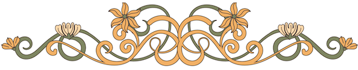

Erkki Melartin 150 vuotta -juhlavuosi
Tule säveltäjä Erkki Melartinin seuraan juhlavuoden 2025 ajaksi.
Pääset kulkemaan syvästi inhimillisen, kanssaihmisiään aina rohkaisevan ja tulevien sukupolvien
palvelemiseen omistautuneen merkkihenkilön, Erkki Melartinin, matkassa läpi hänen elämänsä,
musiikkinsa ja suurenmoisen henkisen perintönsä.
Tarjolla on tapahtumia, näyttelyitä, konsertteja, esitelmiä ja näkökulmia suomalaiseen
musiikkielämään 1800-luvun lopusta 1930-luvulle asti. Melartinin 150-vuotisjuhlan kunniaksi ilmestyy
myös ensimmäinen elämäkerta hänestä ihmisenä, johtajana, sävellyksenopettajana. Hän oli koko
elämänsä avoin kaikelle uudelle ja uskoi loppuun asti hyvyyden voimaan
Nähdä hyvää kaikessa ja kaikissa.
Kun Erkki Melartinin sävelruno Traumgesicht kolme vuotta sitten esitettiin Radion sinfoniaorkesterin konsertissa, huomattiin että unohduksista nousi väkevä orkesteriteos, Melartinin parhaimpiin kuuluva sävellys. Tämä todistaa, että musiikinhistoriamme merkkisäveltäjiä kannattaa edelleenkin nostaa esiin Sibeliuksen varjosta. Silloin saattaa löytyä helmiä, kuten tämä Melartinin uhkeasti soiva sävelruno.
Koko Helsingin soitannollinen yleisö oli eilen kokoontunut Erkki Melartinin sävellyskonserttiin. Odotukset olivat epäilemättä melkoiset, mutta en luule kenenkään pettyneillä toiveilla palanneen tilaisuudesta, sillä siinä kuultu uusi musiikki osoitti selvään nuoren säveltaiteemme yhä laveammalle levittävän siipiänsä, yhä kaunopuheisempana ja sisällöltään rikkaampana pyrkivän esille.
Kuuntele
Erkki Melartinin
sävellys "Romanssi" esittäjänään Hugo Huttunen ja Ernst Linko. Äänite on vuodelta 1929.